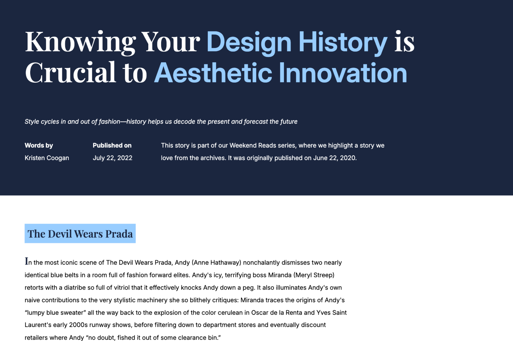
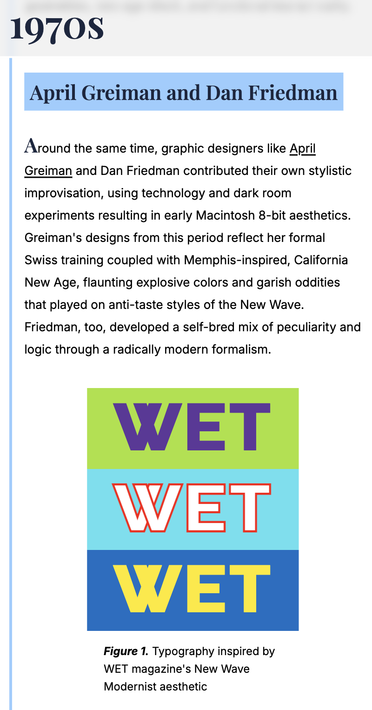
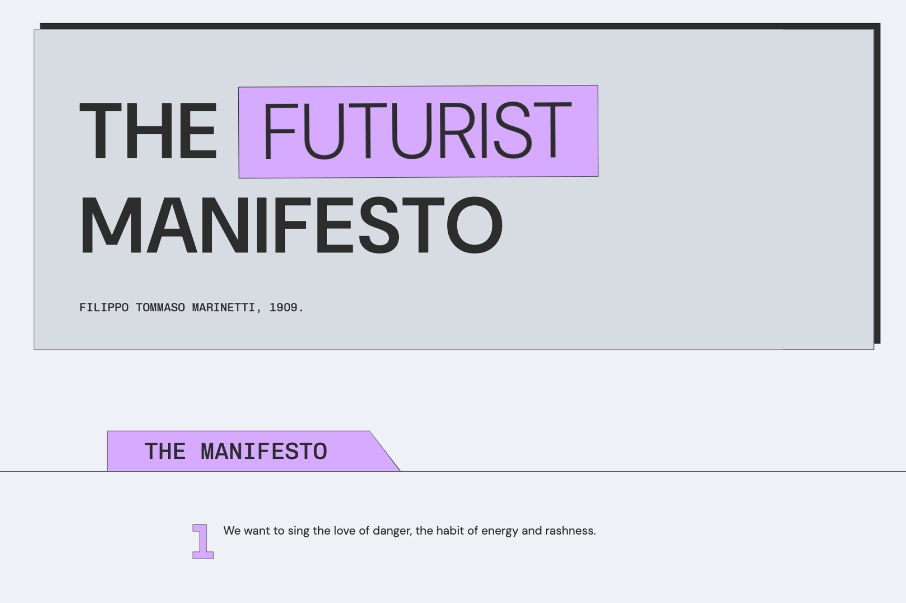
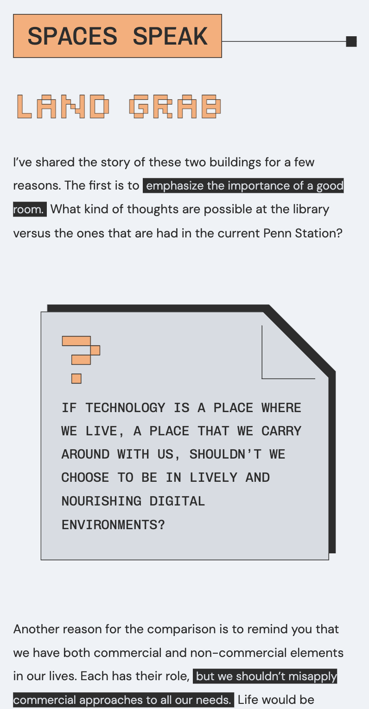
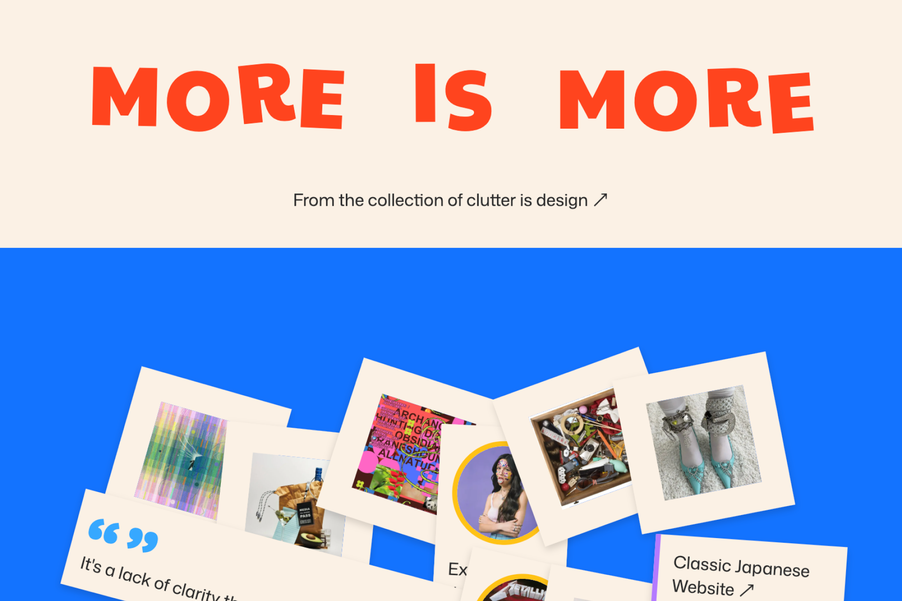
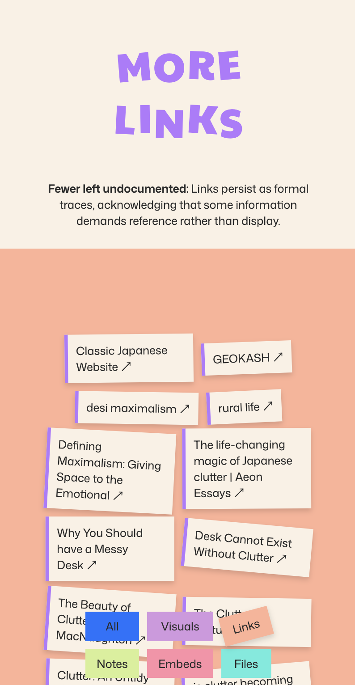
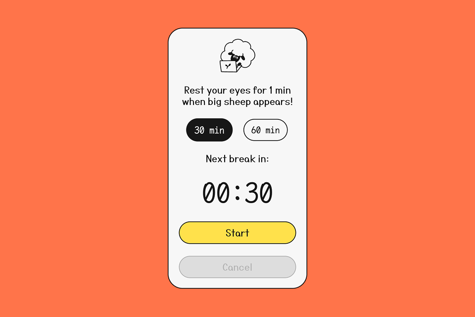

Coding Portfolio
I am a product designer with a background in front-end development, and strategic business. Here are my hand-coded creative projects exploring visual identity, typography and interaction design by bridging concept, system, and implementation.
Digital Surveillance
A responsive manuscripted website critiquing the impact of digital products into our living space. Design elements evoke surveillance, and exhortation.


Great Wheel of Style
A dynamic website scouting the relationship between aesthetics and history in design through a collaboration with a fellow designer.


Design in Neobrutalism
By binding 3 pages, a website exploring how our ideas about technology and the spaces we live in have changed overtime. Neobrutalist design, embracing the unfiltered expression.


Clutter is Design
A dynamic, API-fetched web experience exploring the philosophy of "clutter" by transforming live data from the Are.na into a functional, maximalist interface.


Eye-rest reminder
Chrome browser extension that helps screen-heavy users protect their eyes by reminding them a regular break of 1 minute once in every 30 or 60 min based on user's choice.
